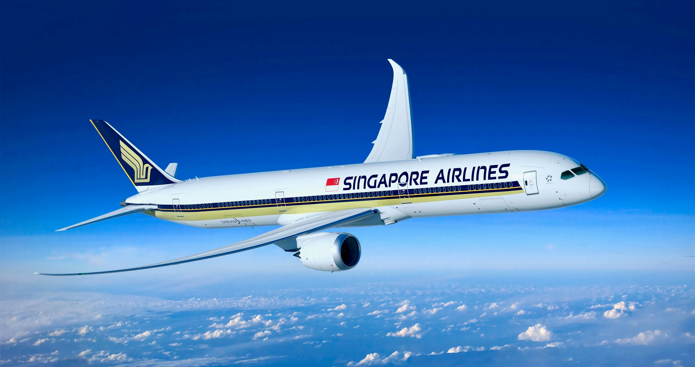
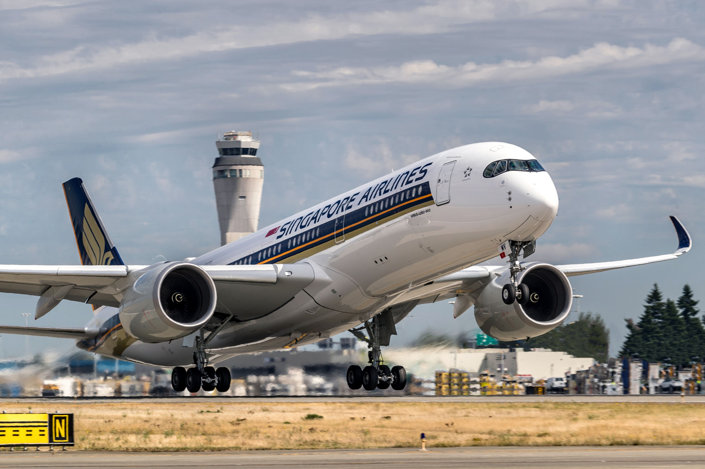
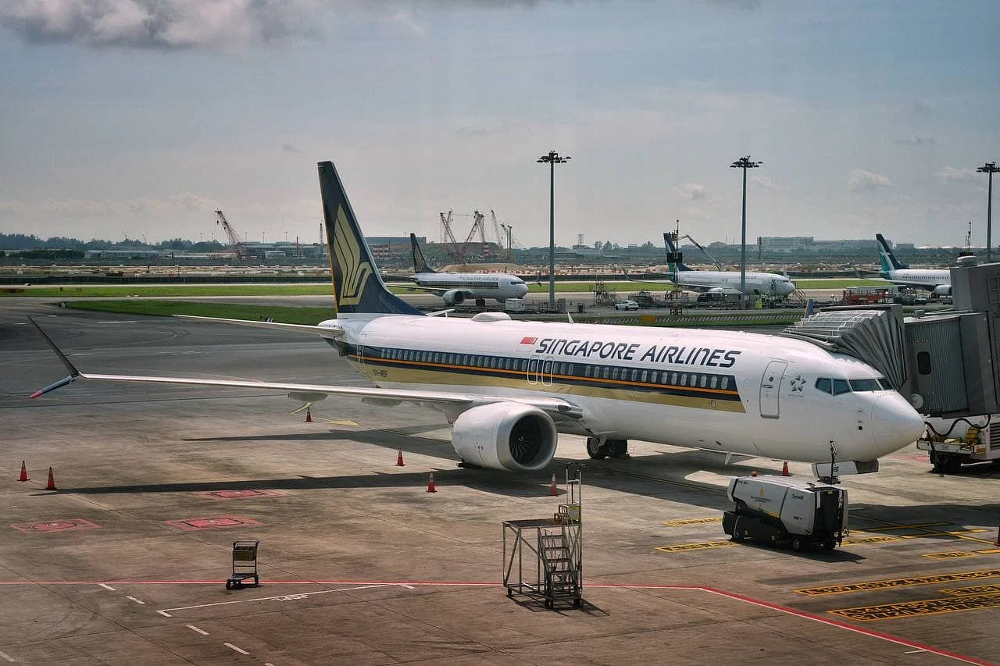
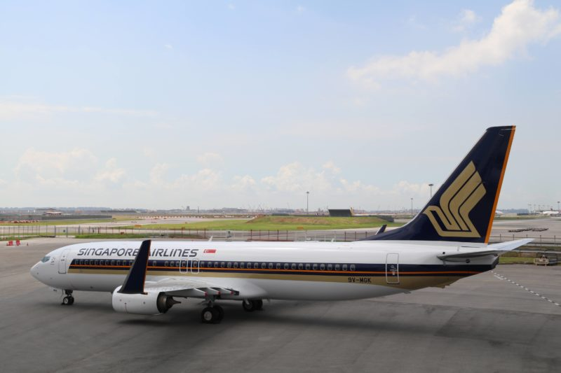

Welcome aboard the world's best airline-
The world's best airline and a five star rating from Skytrax
.jpg)

.jpg)
.jpg)
Watch the history of Singapore Airlines Fleet
 Click this to find out more..jpg)
Extra Information
.jpg)
Singapore Airlines
Singapore Airlines (abbreviation: SIA or SQ) is the flag carrier of the Republic of Singapore with its hub located at Singapore Changi Airport. The airline is notable for highlighting the Singapore Girl as its central figure in the corporate branding segment. The airline is ranked as a 5-star airline by Skytrax, and it has also been ranked as the world's best airline five times. Singapore Airlines Group has more than 20 subsidiaries, including numerous airline-related subsidiaries. SIA Engineering Company handles maintenance, repair and overall (MRO) business across nine countries with a portfolio of 27 joint ventures including with Boeing and Rolls-Royce. Singapore Airlines Cargo operates SIA's freighter fleet and manages the cargo-hold capacity in SIA's passenger aircraft. Scoot, a wholly owned subsidiary, operates as a low-cost carrier. Singapore Airlines was the first to put the Airbus A380—the world's largest passenger aircraft—as well as the Boeing 787-10 into service and is the only operator of the ultra-long-range (ULR) version of the Airbus A350-900. It ranks amongst the top 15 carriers worldwide in terms of revenue passenger kilometers and is ranked tenth in the world for international passengers carried. Singapore Airlines was voted as the Skytrax World's Best Airline Cabin Crew 2019. The airline has also won the second and fourth positions as the World's Best Airlines and World's Cleanest Airlines respectively in 2019.In 2023, the airline for the fifth time took the prize of "Best Airline" as well as the "Best First Class Airline" by Skytrax.Singapore Airlines is majority-owned by the Singapore government investment and holding company Temasek Holdings, which held 55% of voting stock as of 31 March 2020.
.jpg)
Singapore Airlines Cargo
Singapore Airlines Cargo (abbreviation: SIA Cargo) is the unit within Singapore Airlines (SIA) responsible for air cargo operations. It was incorporated in 1988.SIA Cargo manages the cargo operations of SIA's fleet of freight- and passenger aircraft. Its main office is on the fifth floor of the SATS Airfreight Terminal 5 at Singapore Changi Airport.Singapore Airlines has been in the cargo business for over 50 years. They first started the cargo operations flying the Airspeed Consuls in 1947. In July 1992, Singapore Airlines created a cargo division to complement its passenger-carrying business. However, it was not until 1 July 2001 that Singapore Airlines Cargo was incorporated, taking over the air-freight operations of Singapore Airlines as a separate subsidiary. SIA Cargo leased the entire freighter fleet from Singapore Airlines, as well as taking over management of the cargo holds in all of Singapore Airlines' passenger aircraft. Within a few months, it entered an alliance with Lufthansa Cargo and SAS Cargo Group to form WOW Alliance on 1 October 2001.SIA Cargo's warehouse in Singapore, dubbed SIA Superhub 1, was opened in 1995. This warehouse is capable of handling up to 450,000 tons of goods a year. In 2001, the SIA Superhub 2 was opened which increased the capacity to over 1,200,000 tonnes per year.In December 2008, Singapore Airlines Cargo was alleged by the Australian Competition & Consumer Commission (ACCC) to be a participant in a price fixing cartel in the air cargo industry.As of 31 March 2018, Singapore Airlines Cargo offered dedicated Boeing 747-400 freighter services to 19 cities in 13 countries and territories, including Singapore.
Scoot
Scoot Pte Ltd, operating as Scoot, is a Singaporean low-cost airline and a wholly owned subsidiary of Singapore Airlines.It began its operations on 4 June 2012 on medium and long-haul routes from Singapore, predominantly to various airports throughout the Asia-Pacific region. Scoot's airline slogan is Escape the Ordinary.Scoot's fleet initially consisted of six Boeing 777-200ER aircraft previously operated by parent company Singapore Airlines until 2015, when the airline began to transition its long-haul fleet to the Boeing 787 Dreamliner. Scoot also uses the Airbus A320, inherited from Tigerair, another low-cost Singaporean airline which officially merged with Scoot on 25 July 2015, along with the Airbus A320neo and Airbus A321neo for its short-haul flights. Tigerair was merged into Scoot to consolidate the low-cost airline business, where its operations were absorbed into Scoot with the use of Tigerair's air operator's certificate (AOC). With the change of AOC following the merger, Scoot's IATA code was changed to Tigerair's TR from TZ, and its ICAO code was changed to Tigerair's TGW from SCO. However, the Scoot brand and the Scooter callsign were retained. Its head office is at Changi Airport.2011–2013: Inception A now-retired Scoot Boeing 777-200ER landing at Singapore Changi Airport in 2012In September 2014, Scoot announced that it would introduce the B787-9 in Sydney, Perth and Hong Kong from 29 March 2015. On 25 May 2011, Singapore Airlines announced it would establish a low-cost subsidiary airline for medium and long-haul routes.
Fleet Of SIA
| Number Of Planes In Service | Aircraft Name | Image |
|---|---|---|
| 63 in service | Airbus A350-900 |  |
| 7 in service | Airbus A350-900-Ultra Long Range;Extra Wide Body | .jpg) |
| 14 in service | Airbus A380-800 | .jpg) |
| 16 in service | Boeing 737-8 MAX |  |
| 8 in service | Boeing 737-800 Next Generation |  |
National Anthem Of Singapura (Malay For Singapore): MAJULAH-SINGAPURA
1.Come, fellow Singaporeans
2.Let us progress towards happiness together
3.May our noble aspiration bring
4.Singapore Success
5.Come, let us unite
6.In a new spirit
7.Let our voices soar as one
8.Onward Singapore
9.Onward Singapore
1.来吧，新加坡人民
2.让我们共同向幸福迈进；
3.我们崇高的理想，
4.要使新加坡成功
5. 来吧，让我们以新的精神
6.团结在一起；
7.我们齐声欢呼
8.前进吧，新加坡！
9.前进吧，新加坡！
1.Mari kita rakyat Singapura
2.Sama-sama menuju bahagia
3.Cita-cita kita yang mulia
4.Berjaya Singapura
5.Marilah kita bersatu
6.Dengan semangat yang baru
7.Semua kita berseru
8.Majulah Singapura
9.Majulah Singapura
Sing again,starting from the 5th line and move along with the 7th.